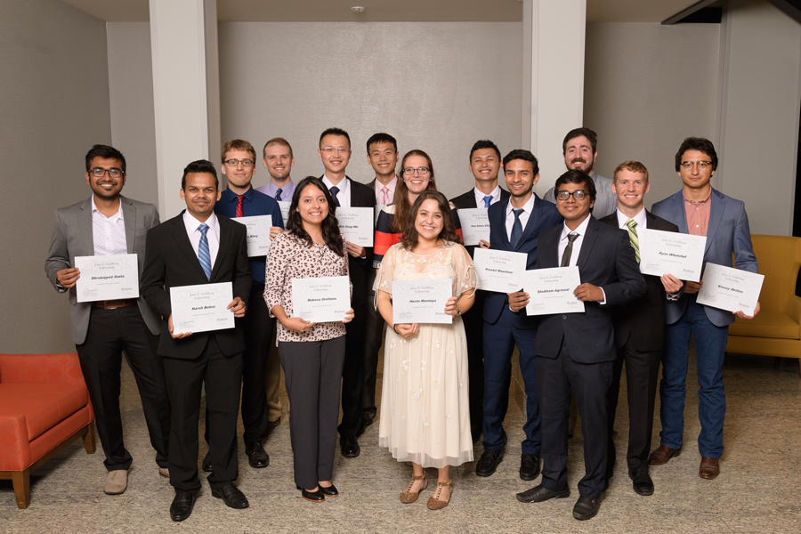
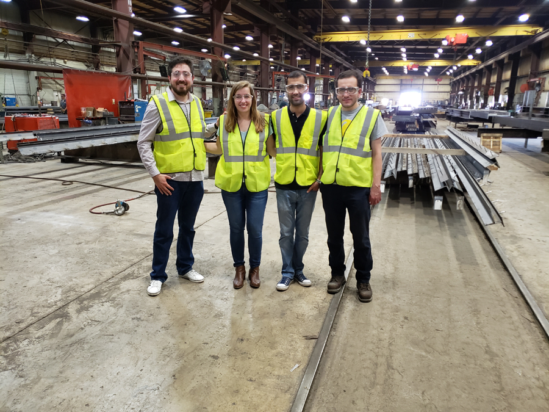

| About me | Resume | Music | Solar | Purdue | Art |
I enrolled in the Master’s in Civil Engineering program with a concentration in Structures at Purdue University in 2018. I had the opportunity to work with my advisor, Dr. Amit Varma, at the Bowen Laboratory a large-scale civil engineering research center. As a part of a team of graduate students, I helped by visualizing experiments to test Modular Steel Plate Composites specimens.
Use my drafting experience to visualize possible layouts and configurations to test connections for shear walls and coupling beams and participated in the construction and testing of various composite specimens.
I was awarded the Goldberg Fellowship by Purdue University in 2018. Awarded to student that shows interest in Structural Engineering and has an outstanding academic performace.
Also received a Scholarship for Graduate studies by CONACYT in 2018, a competitive scholarship awarded by the National Science and Technology Council of Mexico to pursue my graduate studies abroad.

